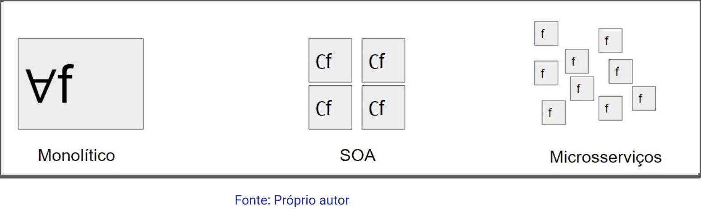

Disciplinas
TÉCNICAS AVANÇADAS DE DESENVOLVIMENTO DE SOFTWARE-T01-2024-2 Concluído
Materiais
Vídeo 1 - [UFMS Digital] Técnicas Avançadas de Desenvolvimento de Software - Módulo 4 - Unidade 2 - Microsserviços sendProf° ministrante: Luciano Édipo Pereira da Silva
Conteúdo
- Microsserviços
- Criando microsserviços com Docker
- Aplicações de microsserviços
- Microsserviços e arquitetura monolítica
- Benefícios e desafios da utilização de microsserviços
- Estudo de caso: Implementação de um sistema baseado em microsserviços.
Microsserviços
Arquitetura de desenvolvimento de software que descompõe uma aplicação monolítica em pequenos serviços independentes, favorecendo escalabilidade, manutenção e implementação ágil.
- Um tipo de abordagem arquitetônica SOA
- Objetivo: Atomicidade dos serviços -> altamente modulares, escaláveis
- Descentralização maior que no SOA
- Distribuição maior que no SOA
SOA é uma abordagem mais abrangente, enquanto os Microsserviços são uma implementação específica dessa abordagem, destacando-se pela modularidade e autonomia dos serviços.
DockerDocker é uma plataforma que simplifica o desenvolvimento, distribuição e execução de aplicativos em contêineres, proporcionando uma abstração eficiente sobre a infraestrutura e permitindo a portabilidade entre diferentes ambientes.

Criando microsserviços com Docker
- Isolamento e Portabilidade
- Padronização do Ambiente
- Rápido Provisionamento
- Gerenciamento de Dependências
- Escalabilidade
- Versionamento
- Comunidade e Ecossistema
- …
Ex.:
version: '3'
services:
servicel:
build:
context: ./servicel
ports:
- "3001:3000"
service2:
build:
context: ./service2
ports:
- "3002:3000"
Aplicações de microsserviços
- Sistemas compostos por pequenos serviços
- Cada microsserviço é responsável por uma função específica
- Comunica-se com outros microsserviços por meio de APIs
Microsserviços e arquitetura monolítica
Monólito Descentralização
Acoplamento Forte Desacoplamento
Escala Vertical Escala Horizontal
Implantação única Implantação Independente

Benefícios e desafios da utilização de microsserviços
Benefícios:- Escalabilidade
- Flexibilidade
- Manutenção
- Implementação de Novas Funcionalidades
- Microsserviços
- Ambientes Dinâmicos
- Mudanças Frequentes
- Escalabilidade Horizontal
- Gestão da Complexidade da Comunicação entre os Microsserviços
- Coordenação das Operações
- Garantia da Consistência dos Dados em um Ambiente Distribuído
- Práticas Adequadas de Design
- Uso de Ferramentas de Orquestração
- Boas Práticas de DevOps
Estudo de caso: TaskHub
Desenvolva um sistema web simples para gerenciamento de tarefas:
- Refatore o sistema para dividir funcionalidades distintas em microsserviços independentes.
- Implemente uma comunicação assíncrona entre os microsserviços.
- Utilize uma ferramenta de orquestração para gerenciar a implantação e a escalabilidade dos microsserviços.